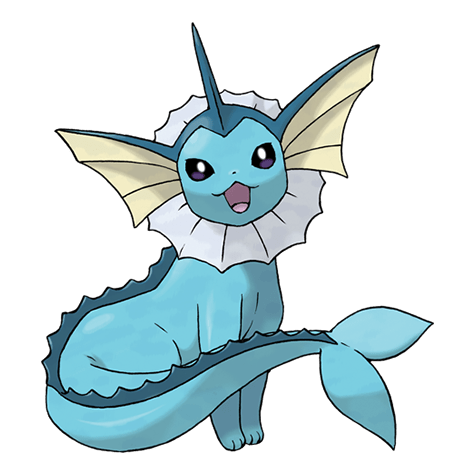

Назад
Вапореон

Вапореон — Покемон первого поколения под номером 134 в Покедекс. Обитает он в регионе Канто и относится к Водному типу. Это одна с последних стадий эволюции Покемона Иви. Вапореон подвергся спонтанной мутации, и у него выросли плавники и жабры, которые позволяют ему жить под водой. Этот Покемон может свободно управлять водой.
Тип:
Водяной
Эволюция
# 133 Иви
=>
# 134 Вапореон
or
# 135 Джолтеон
or
# 136 Флареон